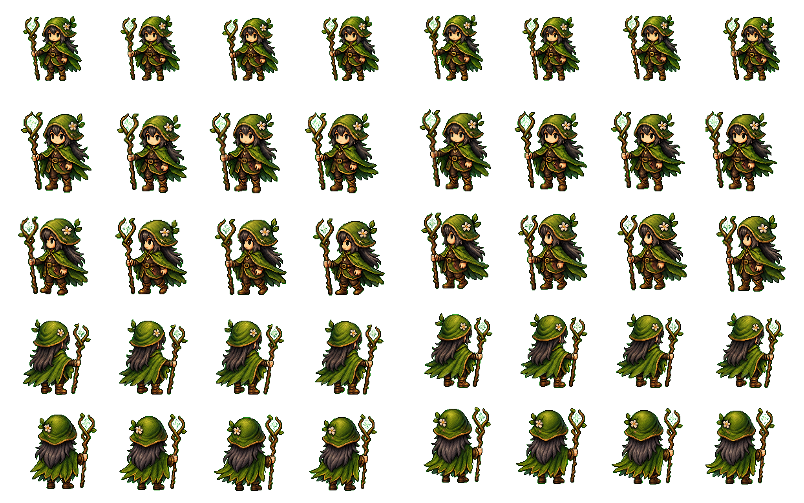
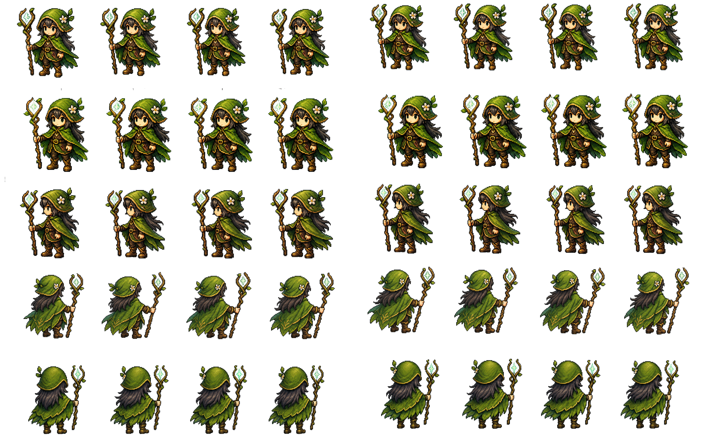
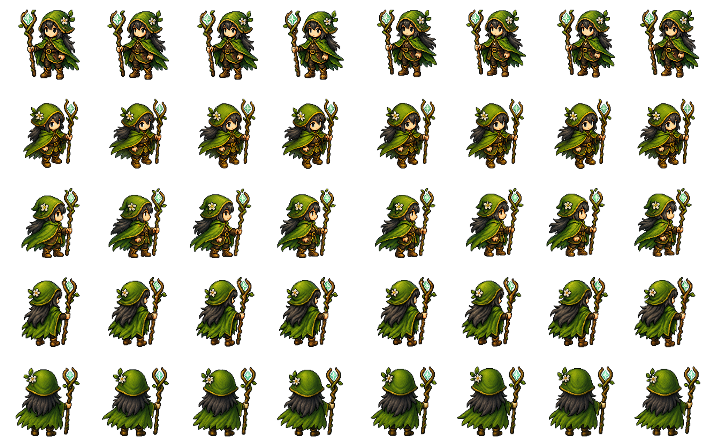

Direct Transparent Animation Generation QA
Source: forest-mage-idle.png. Sheets below use a checkerboard matte only for review; direct transparent PNG files keep their original alpha.
| Label | Job ID | Mode | Alpha QA | Visual quality | Near transparent ratio | Edge opaque ratio |
|---|---|---|---|---|---|---|
| baseline-chroma-key | codex-job-2026-06-27T16-17-01-671Z | chroma-key | PASS | pass | 0.671-0.773 | 0.000-0.006 |
| direct-transparent-b-no-checkerboard | codex-job-2026-06-27T16-28-44-549Z | direct-transparent | PASS | fail-silhouette | 0.658-0.764 | 0.000-0.000 |
| direct-transparent-c-alpha-contract | codex-job-2026-06-27T16-40-58-676Z | direct-transparent | PASS | pass | 0.613-0.696 | 0.001-0.028 |
| direct-transparent-d-color-preserve | codex-job-2026-06-27T17-02-26-534Z | direct-transparent | PASS | pass | 0.639-0.692 | 0.000-0.000 |
baseline-chroma-key
reference chroma-key baseline after green removal

direct-transparent-b-no-checkerboard
alpha-pass but visual quality is poor: black silhouette/mask-like output
direct-transparent-c-alpha-contract
alpha-pass and visual quality is usable/full color

direct-transparent-d-color-preserve
alpha-pass and visual quality is usable/full color

Animated GIF Comparison
| Direction | Baseline | Direct B | Direct C | Direct D |
|---|---|---|---|---|
| front | ||||
| front three-quarter | ||||
| side | ||||
| back three-quarter | ||||
| back |
Direct A Blocked Sidecar
{
"status": "blocked",
"reasonKind": "unknown",
"userMessage": "Direct-transparent alpha PNG output could not be produced by the available built-in image generation path.",
"suggestion": "Retry with a native-transparency-capable generation path, or submit a job that permits chroma-key removal."
}